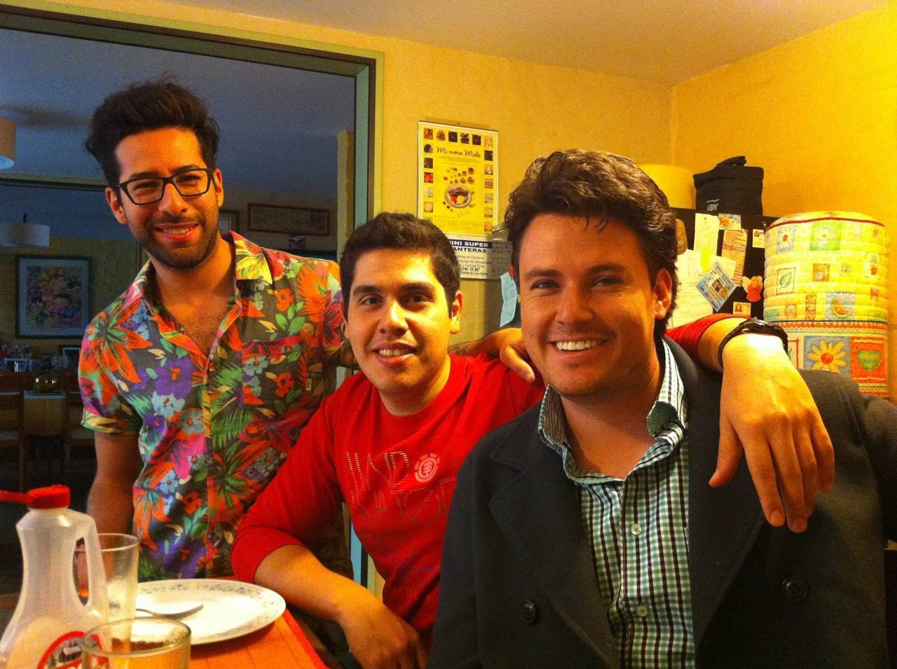
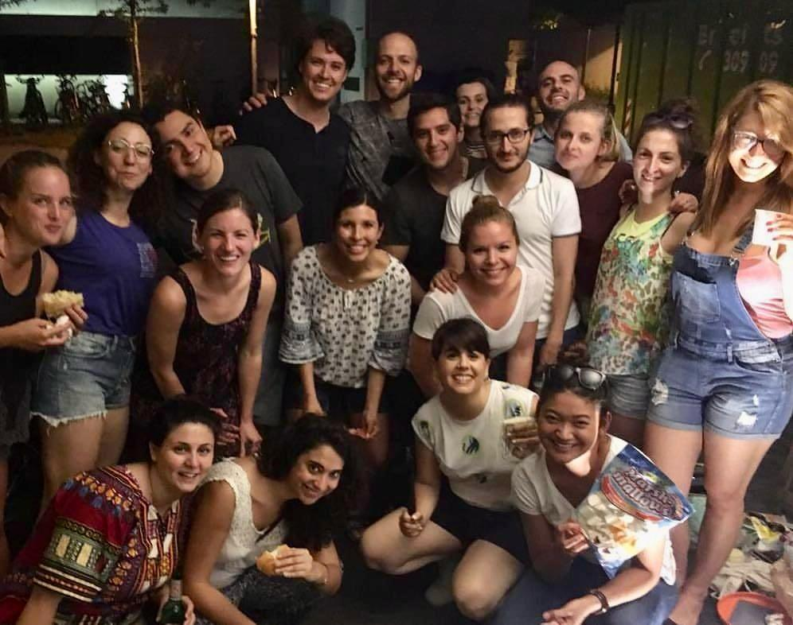
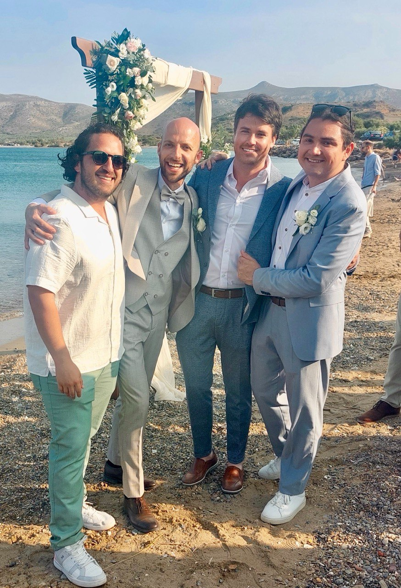
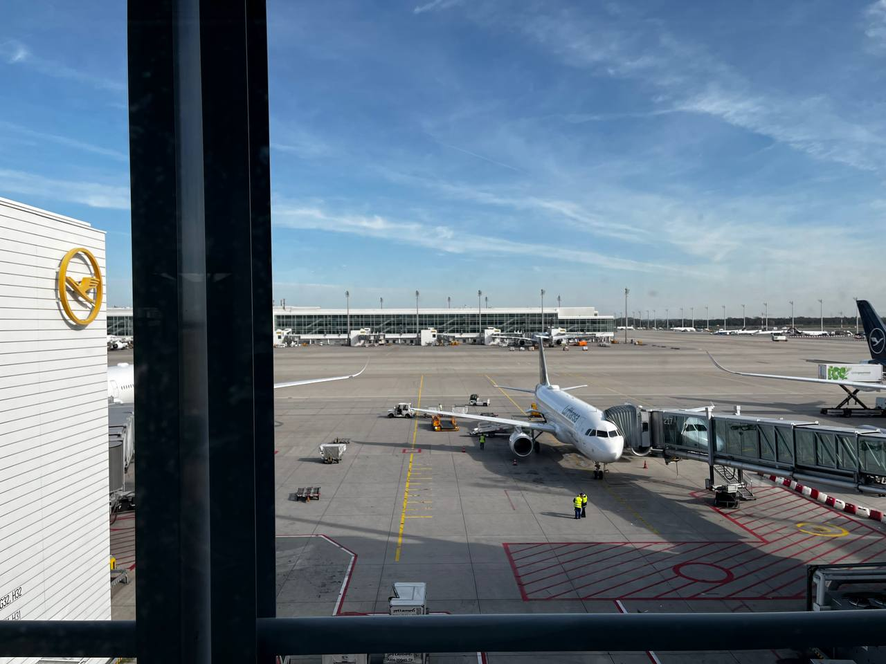

"Impression, soleil levant" (1873) by Oscar-Claude Monet. This painting is very suitablable for my mood these days, with the perspective of a new sunrise, leaving behind great and important aspects of life that are not relevant anymore, represented by those great buildings in the back but with clouds of smoke. There is also the display of a new beginning: The sunrise in the east also lead the way to march on the west, into the ocean. I like to think we are on a boat or a ship and we could find our destination if we focus on our lighthouse, maybe on the other side of the ocean 😉.
Travelling
Dear Erin,
Today, I am writing you from the airport, I am going to Mexico for a couple of weeks since a very good friend is getting married so I could not say no to be there in that special moment. I am also happy to spend some time in my hometown and visit my family.
I am leaving with mixed feelings since many things have happened for me these last days, at least emotionally speaking. I am having a good sensation after this because I often carry in my head many concerns and ideas regarding the situations surrounding me, maybe because I am a sensible person that notices very much, but after some resolutions I can genuinely say that now I have a sensation of freedom and I travel more light in my soul. Therefore I identify myself wit the painting, following my lighthouse and clear objectives with more determination than ever.
These are Carlos, Yamil and me. Carlos is the one getting married this saturday.
Also, I want to take the chance to bring you again to Munich and tell you a bit about the important aspects of my life here, as a way to give you an idea of how I have experienced my time these years.
First of all, I must tell you about my circle of friends, maybe the most important aspect of all. Being far away and not having my family around has been challenging all this time. And life here has been possible only with the valuable support and love from these friends that I had the luck of meeting here.
I came to Munich in 2015, and I know most of these friends since that time when I started to study my master at TUM. We are a group formed by very international people with diverse backgrounds (germans, italians, americans, mexicans, french) and many different personalities with different goals and ways of interact with each other, but have establish a nice bound and we have stayed together in difficult moments during these years.
This photo is very special since we all (almost) are present here (2018).
We have evolved and changed, but almost all of us are still here in Germany and we continue meeting regularly and sharing the progress in different phases of life that all of us are having, making the friendship to last. Maybe it is a way in which I can feel a bit like home being far away from Mexico.
From them, I can mention you to Marco, Jaime and Pablo, who are my guys here in Munich and the ones that have given another meaning to the word friendship. We did a very good team during our master and afterwards and we have shared so many nice moments together. Marco got married last year and he left to Italy with his wife, but we still visit him from time to time in Rome. Here you have us:
Pablo, Marco, me and Jaime in Crete at Marco's weeding (2023).
I am happy to talk to you more in detail in a future post or in a call, since each of them is special and I have nice memories and funny stories to let you know.
Do you also like this?
Additionally, I am also doing some progress with my hobbies of playing the trumpet and reading. I actually have some plans for the trumpet playing while being in Mexico so I will likely tell you more about this during my time there. But as a premise, I am happy that my repertory is increasing and I can eventually consider playing in some interesting places. I imagine you are familiar with mexican music, isnt it? Have you heard this one?:
"La Bikina"by Luis Miguel.I read a couple of very good books that gave too much to think and make reflections in the last months, one of them I mentioned you in our conversation, The Sttepenwolf and also I read recently, David Copperfield . Both of them are deep books that would be nice to share and discuss with you some day, or any other book as well, I just felt like sharing it now with you.
I say good bye for now since they are calling for boarding :), I will let you know how everything goes while being at home. I wish you are having nice days and I hopefully we can have a call in the next days of weeks,
You can find then affection that wishes you the best, and views of your eyes that provoque a smile, deep inside of,
Leonardo.
My view, right now.